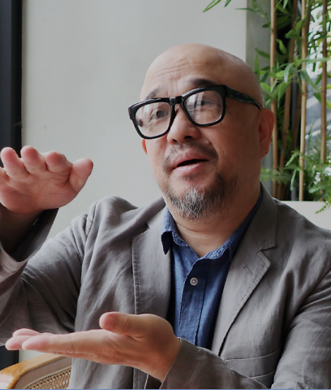
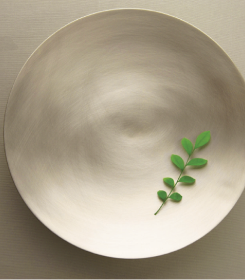
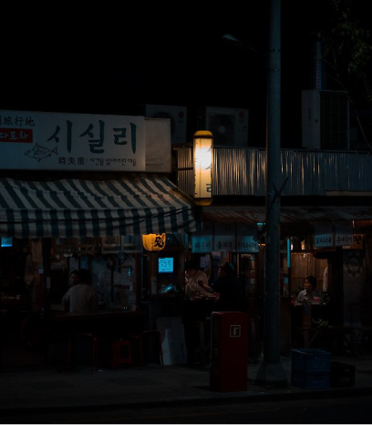
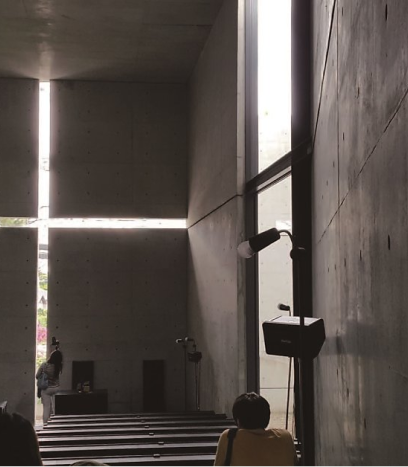

-

1945년(을유년)
광복의 감격과 의의를 기리며
乙酉文化史
‘출판은 곧 건국 사업’이라는 사명감으로 첫발을 내딛다. -

잃어버린 우리말과 영혼을 되살리고,
乙酉文化史
더불어 문화 발전에 기여한다. -

출판은 이윤을 추구하는 사업보다는
乙酉文化史
사회에 공헌하는 문화 사업이다.
월간 을터뷰
을유문화사에서 만난 사람들의 이야기
-
작가 김필영
감각을 잘 느껴야 좋은 영감이 내면의 소재 창고에 쌓이고 그것들이 결국 좋은 글을 만들어 낼 수 있다고 믿어요.
자세히 보기 -

재즈 칼럼니스트 황덕호
빌 에반스의 음악은 단면적으로 보면 로맨틱하고, 다정다감하다고 생각할 수 있어요. 그렇지만 이런 내용을 알고 들으면 음악이 다층적으로 들릴 수도 있을 것 같아요.
자세히 보기 -
오디오 평론가 이현준
오디오 평론가(비평가)는 장인을 이야기하거나, 장인의 제품을 이야기하는 사람이잖아요. 그래서 창조에 대한 갈증이 계속 있죠. 하지만 제 경우에는 오디오 공간을 설계하는 일로 이어졌어요.
자세히 보기
을유의
소식
을유문화사에서 만난 사람들의 이야기
-
제약은 창조의 어머니
건축가는 그 제약을 없애 버리기보다 오히려 제약을 풀기 위해 창의적인 생각을 하여 새롭고 독특한 디자인을 창조해 냈다. 제약은 새로운 창조의 어머니다.
-
낯선 것과 친숙한 것의 결합
〈러프 컷〉은 대비로 가득 차 있다. 얼음 표면의 차가움은 사랑에 대한 헛된 추구와 부합하는데, 무용수들은 수많은 소소한 접근으로 그것에 몰두한다
-

은은한 기품을 먹는 즐거움, 현대적 디자인의 유기그릇 ‘놋이’
음식점뿐 아니라 일반 가정에서도 변하지 않는 것의 믿음을 확인해 보는 것도 좋겠다. 아름다운 자태와 기품을 풍기는 우리만의 멋진 유기그릇이 있다는 건 좋은 일이다.
-

한 가지 단서
사랑과 두려움이 동의어인 한 사람의 이야기 『언제 들어도 좋은 말』에 이은 이석원의 8년 만의 이야기 산문집
-
"여행 중에 삶을 바꾼 질문을 만나 본 적 있나요?"
종종 뜻깊은 여행은 소중한 질문을 품고 정신적 목적지를 탐색하는 여정입니다. 이때 여행은 낯선 공간과 새로운 풍경을 벗 삼아 질문과 해답 사이를 걷는 길입니다.
-

전통 건축의 파격적 재해석
건물과 만나는 담장이라니! 오랫동안 건물과 담장은 따로 떨어져서 존재했었는데, 이 담장이 건축을 관통해서 들어오는 극적인 만남을 갖도록 설계한 것이다.